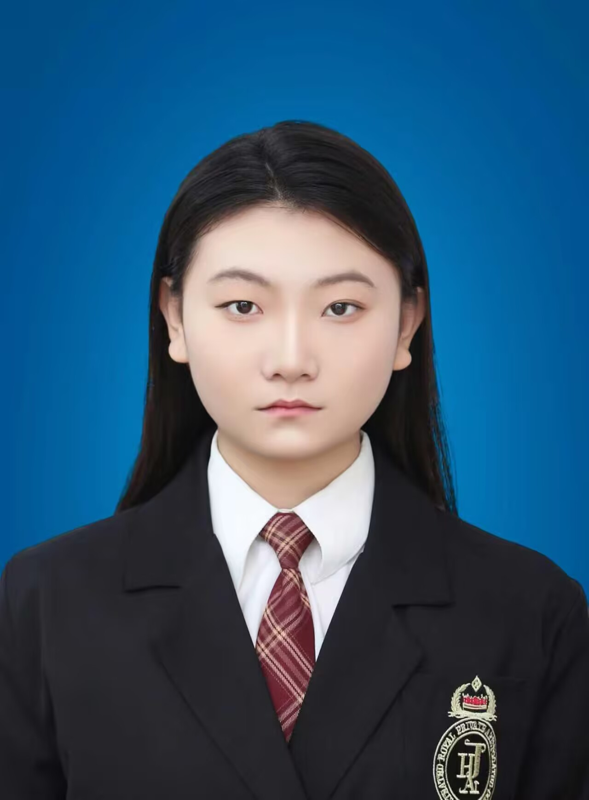

|
 刘傲雪 |
姓名 | 刘傲雪 | 性别 | 女 |
|---|---|---|---|---|
| 年龄 | 19岁 | 籍贯 | 山东省济宁市 | |
| 联系电话 | 15265746190 | 电子邮箱 | 3279977025@qq.com | |
| 健康状况 | 良好 | 婚姻状况 | 未婚 | |
| 学历与求职意向 | ||||
| 学历 | 本科 | 专业 | 计算机专业 | |
| 毕业院校 | 鲁东大学 | 求职意向 | 软件工程师 | |
| 技能证书 | ||||
|
||||
| 个人特长与爱好 | ||||
|
||||
| 项目经历 | ||||
| 2025年软件杯大赛本科组：基于Web的校园生活服务平台开发 | ||||
| 自我评价 | ||||
| 在学习上，我始终保持着强烈的求知欲和上进心，深知学习是一个不断积累和进步的过程，因此总是以积极的态度面对每一门课程。对于专业知识，我不仅注重理论学习，还积极参与实践活动，将所学知识应用到实际中，通过不断努力在学业上取得了较为优异的成绩。在性格方面，我乐观开朗，善于与人沟通交流，在团队合作中发挥积极的作用，相信团队的力量是无穷的，通过与他人的合作可以共同完成许多看共同完成许多看似不可能的任务。同时，我也具备较强的独立思考能力和解决问题的能力，在面对困难和挑战时，能够冷静分析、沉着应对，不断提升自身的综合素养与专业能力。 | ||||